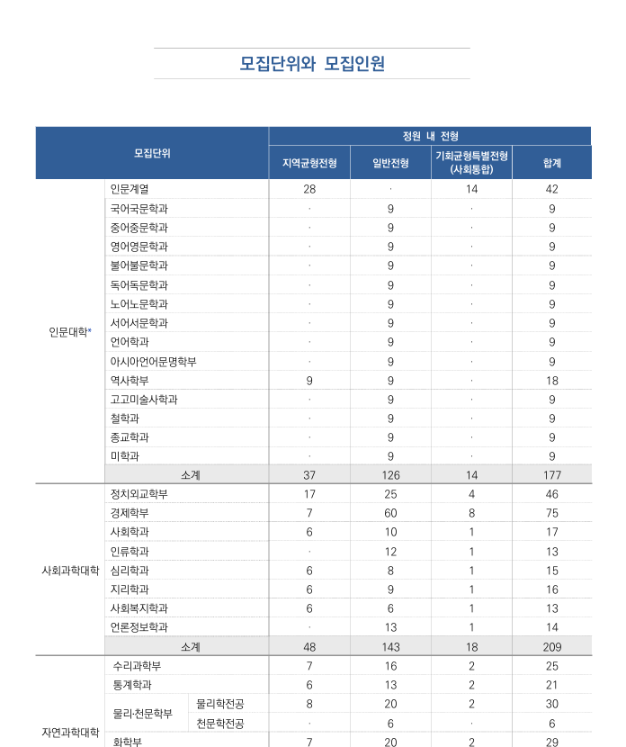
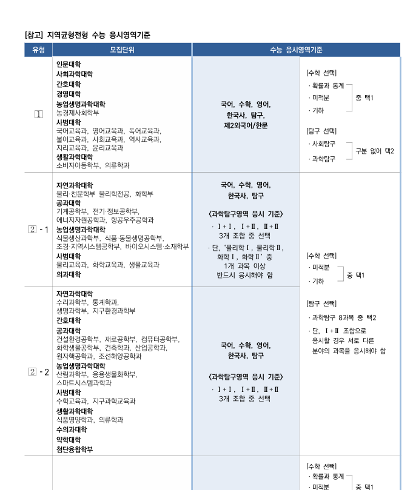
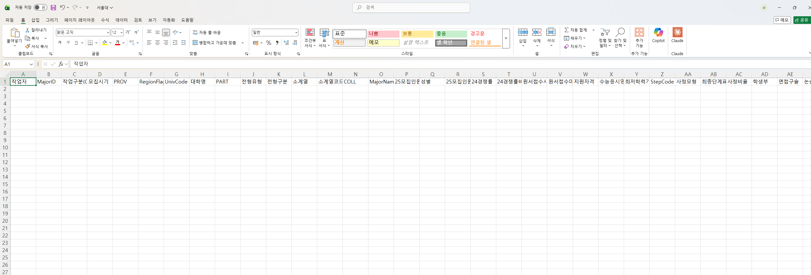
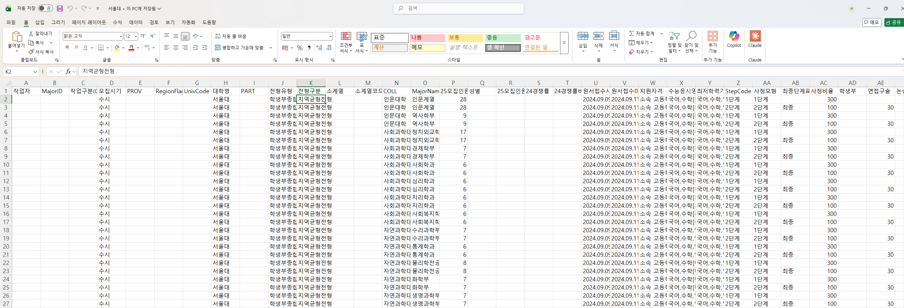

🌧️ 실습 교육 1 | 모집요강에서 서비스 데이터 추출하기¶
비개발자가 코딩 에이전트와 대화하며, 대학 모집요강 PDF에서 핵심 정보를 Excel로 자동 추출하는 전 과정을 체험하는 실습 가이드입니다.
업무 배경¶
배경
진학닷컴에서는 매년 200여 개 대학의 모집요강 PDF를 읽고, 정해진 Excel 양식에 정보를 채우는 작업을 반복적으로 해왔습니다. 지금까지는 사람이 PDF를 한 페이지씩 넘겨가면서 직접 내용을 채웠습니다.
이 작업의 특징:
- 대학마다 모집요강 형식이 전부 다릅니다 (표 구조, 페이지 배치, 용어 등)
- 한 대학당 수십~수백 행의 데이터를 채워야 합니다
- 셀 병합, 페이지 걸침 표, 다단 헤더 등 복잡한 표 구조가 많습니다
- 매년 반복되는 작업이라 자동화의 가치가 큽니다
이 실습에서는 이 작업을 AI 코딩 에이전트와 함께 자동화하는 과정을 체험합니다.
입력 자료: 대학 모집요강 PDF¶
실습에서 다루는 입력 자료는 대학이 매년 발행하는 모집요강 PDF입니다. 수시·정시 모집단위, 모집인원, 전형료, 제출서류 등의 정보가 수십~수백 페이지에 걸쳐 복잡한 표 형태로 담겨 있습니다.


PDF의 주요 특징:
- 표의 열/행 구조가 대학마다 제각각
- 셀 병합, 다단 헤더, 페이지 걸침 표 등 복잡한 레이아웃
- 텍스트가 이미지로 삽입되어 단순 복사·붙여넣기가 안 되는 경우도 존재
목표 결과물: 정해진 Excel 양식¶
추출한 정보를 정해진 열 구조의 Excel 파일에 채우는 것이 최종 목표입니다. 실습 폴더(data/univ_parsed/)에는 열 이름만 있고 내용은 비어있는 양식 파일이 들어 있습니다.
업무 자동화이기 때문에 해당 업무를 잘 알고 있는 담당자임을 가정하고 실습을 진행해야 합니다. 따라서 Excel 양식의 각 열이 어떤 의미를 가지는 지를 설명합니다.
실무 팁
실제 업무를 자동화할 때는 따로 파일에 정의하고 PDF 파일에서 해당하는 부분이 어떻게 나타나는지, 어떤 반례나 예외 사항들이 있는지 예시를 들어서 사진과 함께 정리하면 AI가 훨씬 잘 동작하는 프로세스를 만듭니다.
자동화 대상 데이터 설명¶
이 명세는 실습 폴더에도 들어 있습니다
아래 표와 동일한 내용이 data/columns.md 파일로 실습 zip에 동봉되어 있습니다. Stage 0부터 프롬프트에 @data/columns.md 로 첨부해서 AI가 같은 명세를 그대로 참고하게 합니다.
| 열 이름 | 설명 | PDF 파싱 가능 여부 | 예시 | 비고 |
|---|---|---|---|---|
| 작업자 | 작업 담당자 이름 | X | 상현, 지환, 지인 |
인간 직접 작성 필요 |
| MajorID | 8자리 숫자 ID | X | 15243651 |
규칙 정하면 자동화 가능 |
| 작업구분(Check) | 모집 |
X | 모집 |
사실상 고정값 |
| 모집시기 | 수시 |
X | 수시 |
사실상 고정값 |
| PROV | 대학 소재 광역권 묶음 | X | 서울, 인천경기 |
수동 입력 또는 매핑 필요 |
| RegionFlag | 0/1/2 코드 |
X | 0, 1, 2 |
정확한 의미는 파일만으로 확정 어려움 |
| UnivCode | 대학별 고정 4자리 코드 | X | 경희대=1022, 서울대=1083 |
키-값 매핑 테이블 필요 |
| 대학명 | 대학교 이름 | O | 경희대, 서울대 |
|
| PART | 모집단위 대분류 코드 | O | 1=인문, 2=자연, 3=예체능, 4=자유 |
|
| 전형유형 | 상위 전형 카테고리 | O | 교과, 종합, 논술, 실기 |
|
| 전형구분 | 대학별 세부 전형 트랙명 | O | 지역균형, 네오르네상스 |
대학별 명칭 다양 |
| 소계열 | 내부 학문분류명 | X | 국어·국문학, 컴퓨터·소프트웨어공학 |
키-값 매핑 테이블 필요 |
| 소계열코드 | 소계열 대응 내부 코드 | X | B1101, C1403 |
코드 패턴 확인됨 |
| COLL | 단과대/계열명 | O | 문과대, 인문대 |
자유전공은 빈값 가능 |
| MajorName | 모집 단위명 | O | 국어국문, 자율전공학부 |
|
| 25모집인원 | 숫자형 모집인원 | O | 12, 28, 49 |
다단계 전형은 같은 값 반복 |
| 성별 | 0=공통, 1=남, 2=여 |
O | 0, 1, 2 |
대부분 0 |
| 25모집인원 비고 | 모집인원 보충 설명 | X | 인문대 전체모집인원 6명 |
대부분 공란 |
| 24경쟁률 | 숫자형 경쟁률 | X | 5.25, 7, 14.5 |
키-값 매핑 테이블 필요 |
| 원서접수시작 | 원서접수 시작 일시 | O | 2024-09-09 00:00:00 |
datetime 형태 |
| 원서접수마감 | 원서접수 마감 일시 | O | 2024-09-11 00:00:00 |
datetime 형태 |
| 지원자격 | 자유서술형 지원자격 문장 | O | 국내·외 고등학교 졸업(예정)자... |
|
| 수능응시영역 | 수능 응시 요구 영역 | O | 국어,수학[확/미/기],영어,사탐/과탐(2),한국사 |
|
| 최저학력기준 | 수능 최저 기준 | O | 중 3개영역 등급 합 6 이내 |
|
| StepCode | 전형 단계 코드 | O | 0, 1, 2, 10, 20 |
|
| 사정모형 | 단계 표현 방식 | O | 일괄합산, 1단계, 2단계 |
|
| 최종단계표시 | 최종 단계 여부 | O | 0, 1 |
0=중간, 1=최종 |
| 사정비율 | 단계 배수/스케일 값 | O | 100, 200, 300 |
|
| 학생부 | 학생부 반영 비중 | O | 70, 100, 30 |
공란이면 미반영 |
| 면접구술 | 면접/구술 반영 비중 | O | 20, 30, 50 |
공란이면 미반영 |
| 논술 | 논술 반영 비중 | O | 70, 90, 100 |
공란이면 미반영 |
| 실기 | 실기 반영 비중 | O | 25, 80, 90 |
공란이면 미반영 |
| 서류 | 서류 반영 비중 | O | 30, 50, 70 |
공란이면 미반영 |
| 기타 | 기타 평가요소 반영 비중 | O | 70(경기실적) |
비고와 같이 봐야 함 |
| 전형총점 | 해당 단계 총점 기준값 | O | 100, 500, 1000 |
학교/전형별 스케일 다름 |
| 비고 | 평가요소 보충 설명 | O | 기타는 경기실적 |


이 두 파일 사이의 간극 — PDF에서 Excel로 — 을 AI가 자동으로 메꾸는 것이 이번 실습의 핵심입니다.
실습 전 준비¶
준비물
- Claude Code 설치 및 기본 사용법 숙지
- Python 설치 완료
- 실습 폴더 구조 확인
practice_1/
├── data/
│ ├── univ/ ← 실습용 PDF (대학 모집요강)
│ ├── univ_parsed/ ← 추출 결과 저장하는 빈 Excel (열 이름만 있음)
│ └── columns.md ← 컬럼 명세서 (AI에게 첨부해서 사용)
지금 뭘 하는 건가요? (한눈에 보기)¶
실습의 큰 그림
"대학 모집요강 PDF를 읽고 Excel 양식을 채우는 반복 업무" 를 AI와 함께 자동화하고, 그 자동화 과정을 한 번 더 쓸 수 있는 Skill로 포장하는 것이 이 실습의 전부입니다.
flowchart LR
subgraph INPUT["📥 매년 반복되는 수작업"]
P1["모집요강 PDF<br/>(200여 개 대학)"]
E1["빈 Excel 양식<br/>(36개 열)"]
end
subgraph WORK["🤖 이번 실습: AI와 함께 자동화"]
direction TB
S0["Stage 0<br/>일단 시켜보기<br/><i>AI가 뭘 헷갈리는지 본다</i>"]
S1["Stage 1<br/>디테일 채워주기<br/><i>업무 규칙·용어·예외 알려준다</i>"]
S2["Stage 2<br/>자동화 설계 + 검증<br/><i>스크립트를 만들고 정답과 비교한다</i>"]
S0 --> S1 --> S2
end
subgraph OUT["📦 최종 산출물 (마무리)"]
SK["<b>Skill</b><br/>/recruit-parser<br/><br/>→ 다른 대학 PDF에도<br/>한 마디로 재사용"]
EX["채워진 Excel"]
end
INPUT --> WORK --> OUTStage별 로드맵¶
| Stage | 무엇을 하나 | 소요 | 프롬프트 수 |
|---|---|---|---|
| 0 | AI에게 바로 시켜보며 어디서 헷갈리는지 봅니다 | 5분 | 1개 |
| 1 | 도메인 지식·용어·예외 규칙을 붙여줍니다 | 12분 | 1~2개 |
| 2 | 파싱 흐름을 설계·구현하고 정답과 자동 비교합니다 | 25분 | 2개 |
| 마무리 | 지금까지의 흐름을 재사용 가능한 Skill로 만듭니다 | 15분 | — |
왜 마무리 단계(Skill화)가 중요한가요?
Stage 0~2는 이번 한 번 PDF를 Excel로 만드는 과정입니다. 마무리 단계에서 이 흐름을 Skill로 포장하면, 다음에는 /recruit-parser 연세대 PDF 같은 한 마디로 똑같은 작업을 끝낼 수 있습니다. 자동화의 진짜 가치는 반복 실행에서 나옵니다.
다음 → Stage 0. 일단 시켜보기